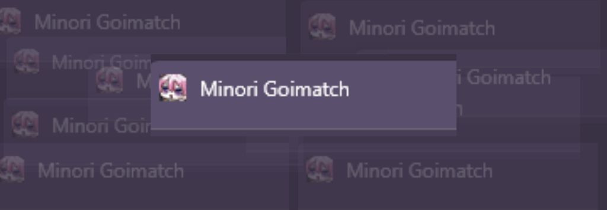
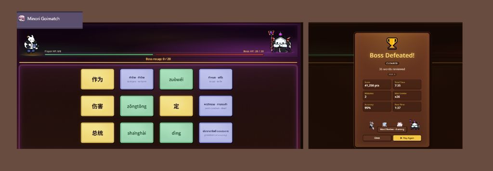
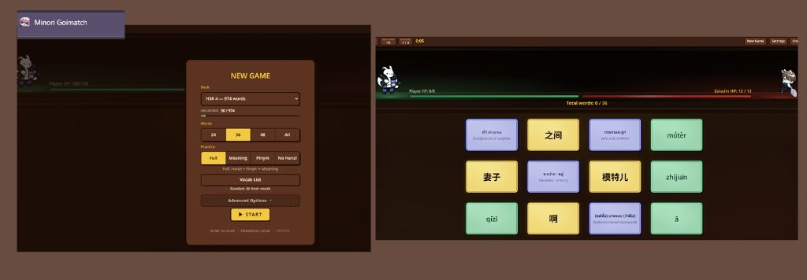

แนะนำเกมช่วยจำศัพท์จีน

สุดท้ายนี้หากใครเบื่อกับการจำจีนเป็นคำ ๆ ตามตารางแล้ว เราขอแนะนำเกม Minori Goimatch ค่ะ
โดยในเกมนี้จะมีลิสต์ระดับคำศัพท์ที่เราอยากจะจำให้ค่ะ ไม่ว่าจะเป็น HSK1-6
แม้กระทั่งภาษาญี่ปุ่นJLPT1-5ก็มี
เป็นเกมที่งานภาพน่ารักมาก ๆ ค่ะเหมาะเวลาเบื่อ ๆ ถ้าอยากจำศัพท์ใหม่ ๆ ก็ลองมาเล่นกันได้นะคะ
รูปแบบเกมคร่าว ๆ


พอเล่นไปเรื่อย ๆ ก็จะมีบอสโผล่มาค่ะ เราก็จับคู่คำศัพท์จนบอสเลือดหมดแล้ว ก็จะขึ้นหน้าสรุปผลที่เราได้ค่ะ
คำไหนที่ผิดเราตัวเกมก็จะบอกเราค่ะ แล้วก็จะมีตัวเลือกให้เราทำเครื่องหมายให้คำที่ผิดได้ด้วย
谢谢 !!!